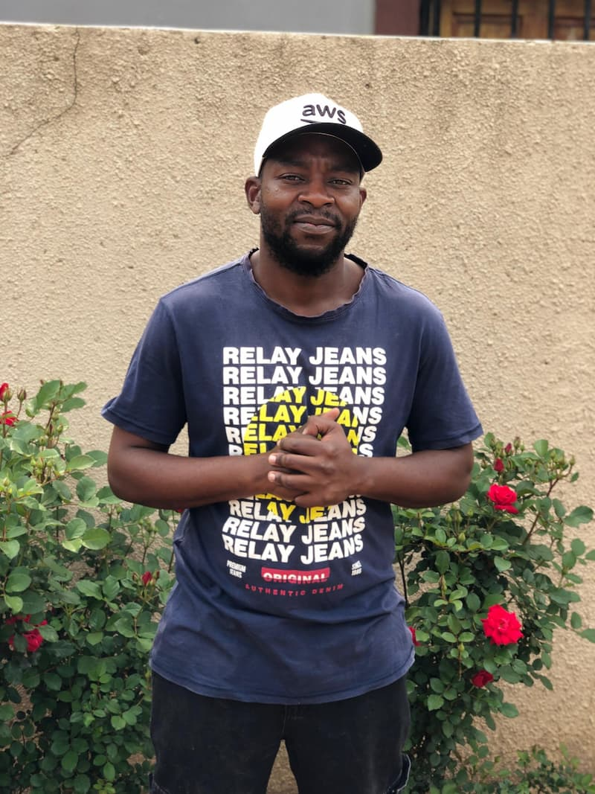

Mpho Rakgope | WDD 130

I'm a full-stack developer and AI enthusiast based in South Africa, driven by curiosity and a strong commitment to solving real-world problems through code. My current focus lies in mobile development, backend systems, and full-stack solutions, utilising technologies such as Python, Java, JavaScript, Node.js, SQL, HTML/CSS, and Flutter/Dart. I also work with Git for team collaboration and version control. My career goal is to advance to a senior developer role, continually refining my skills and expanding my understanding of system design and scalable architecture. Long term, I aim to specialise in the intersection of AI and cybersecurity—leveraging intelligent systems to help secure digital infrastructure. I'm always eager to connect with others in tech and explore opportunities that push boundaries and create impact.